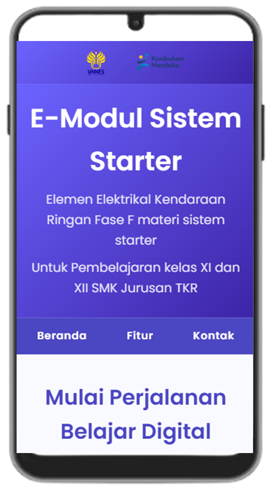
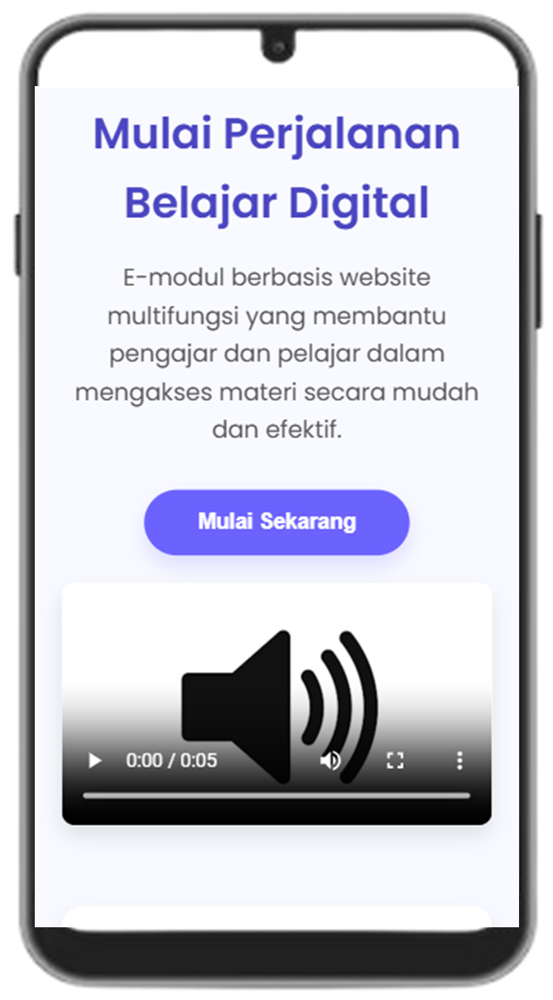
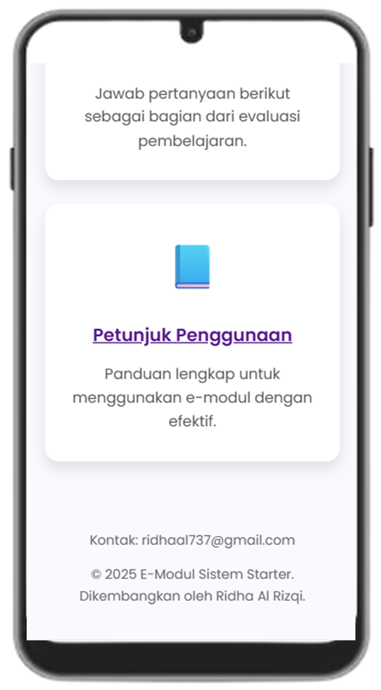

Elemen Elektrikal Kendaraan Ringan Fase F materi sistem starter
Untuk Pembelajaran Kelas XI dan XII SMK Jurusan TKR
📌Cara Mengakses Modul
Gunakan browser seperti Google Chrome, Mozilla Firefox, atau Microsoft Edge.
Ketik alamat website e-modul:
https://emodul-starter.smkteukuumar.sch.id (contoh URL, sesuaikan dengan aslinya).
Pastikan perangkat yang digunakan terhubung dengan internet.
🧭 Navigasi Halaman
Struktur modul

Header modul

Body modul

Footer modul
Menu utama modul
Modul ini terdiri dari beberapa bagian atau sub halaman, meliputi:
Beranda/halaman awal modul
Kata pengantar: Berisi kata pengantar dari pengembang modul
Profil: Berisi informasi tentang profil pengembang modul
Capaian pembelajaran: Penjelasan kompetensi yang harus dicapai
Materi dan kegiatan pembelajaran: Materi modul dan referensi kegiatan pembelajaran yang bisa dilakukan
Evaluasi: Tempat mengerjakan soal latihan pemahaman materi
Petunjuk penggunaan: Petunjuk cara menggunakan modul
Navigasi khusus dalam modul
Tombol kembali ke beranda: Digunakan untuk kembali ke halaman awal/beranda modul
Tombol scroll up: Digunakan untuk kembali ke bagian header modul
📚Pembelajaran materi
Baca setiap materi dengan urut dalam halaman materi dan kegiatan pembelajaran
Gunakan tombol Kegiatan pembelajaran sebagai salah satu referensi bentuk kegiatan yang dapat dilakukan
Setelah mempelajari materi, kembali ke beranda dan masuk ke menu evaluasi
Kerjakan soal-soal yang ada pada menu evaluasi untuk menguji hasil belajar
📞Kontak dan bantuan
Jika mengalami kendala, gunakan menu kontak di bagian footer modul.
Masukkan, kritik, atau saran dapat menghubungi pengembang langsung melalui email yang terdapat pada footer modul maupun dapat menghubungi lewat sosial media yang ada pada menu profil.